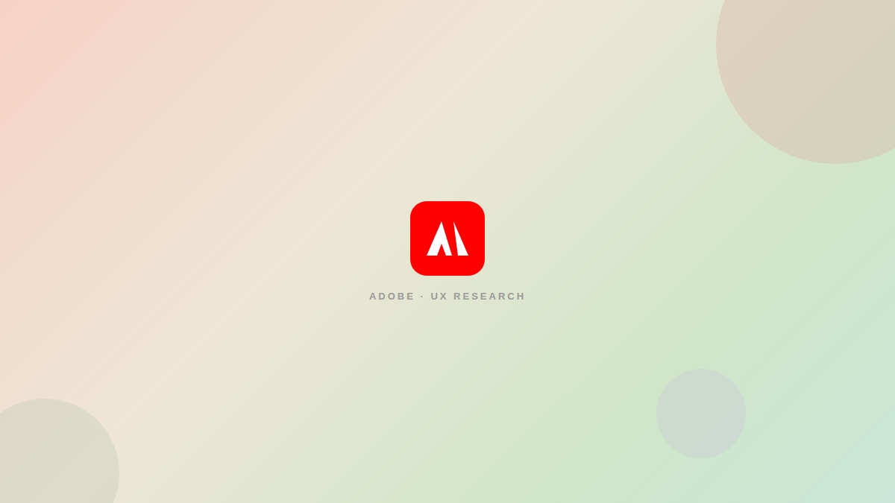
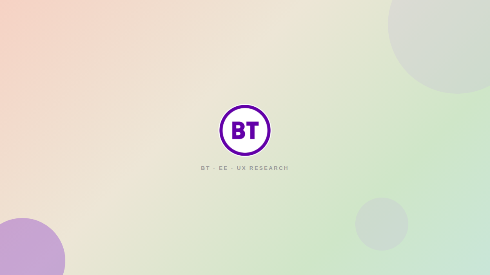

Some of my work

UX research & usability testing for data migration
UX RESEARCH ADOBE
Redesigning partner management through user research, usability testing, and iterative design.
Read Case Study
BT EE Information Architecture
UX RESEARCH
Redesigning IA to simplify navigation & reduce duplication.
Read Case StudyWebsite Redesign: Costa Foundation
UX/UI DESIGN
Redesigning a donation-focused website through heuristics, UX laws and competitive analysis.
Read Case Study